by Sebastien Amato, Felicien Dumas, Eric Gilgenbach, Gabriel Herrera-Lim, and Elena Huang | ITAO 70220 - Data Exploration and Visualization
Case Details
You are the consultant hired by John Leader, president and CEO of the Daily Media Blitz, a media company based in Utah. Like many traditional media companies, Blitz has been in decline for over a decade. In their portfolio, the company has two newspapers, a free market newspaper, a website, a magazine, a commercial printing operation and a digital agency. Much of their revenue is derived from selling advertising— though that has changed somewhat in the last few years since a digital agency was created to sell digital advertising and services (SEO, website design, social media management, etc.) Commercial printing provides a foundation of steady income. While it has been stable, there is little margin and Blitz would need to make a significant investment to increase business. John’s hope was to replace the lost print revenue1 with new streams of revenue coming from the digital agency.
Unfortunately, John is constantly waiting on information from his front-end systems. Typically, accounting gets him the previous month’s financial statements twelve to fifteen days (12-15) after the close of the month, much too late for him to act. He receives salesperson sales reporting weekly, but it is hard to consume since they are just number-based spreadsheets out of Excel. Many times, the reporting he gets from his Director of Sales does not match what comes from accounting— he is frequently surprised when the actual financial results come in after the month is past. He is frustrated and unsure what he needs to do strategically to stabilize the business. If he does not get this under control soon, he will need to make more expense cuts and have another large layoff.
Your task is to advise John on his questions and provide him a daily dashboard so he can have one version of the truth.
Daily Dashboard on Sales Operations Health
Our first task was to create a daily dashboard that provides John with daily updates on the health of his sales operation in total
and by product. John should have the following controls available at a minimum: date range, publication and ad type selection
(1 Print Revenue Ad Types- Classified Display, Classified Liner, Display Advertising, Legal Advertising, Preprints).
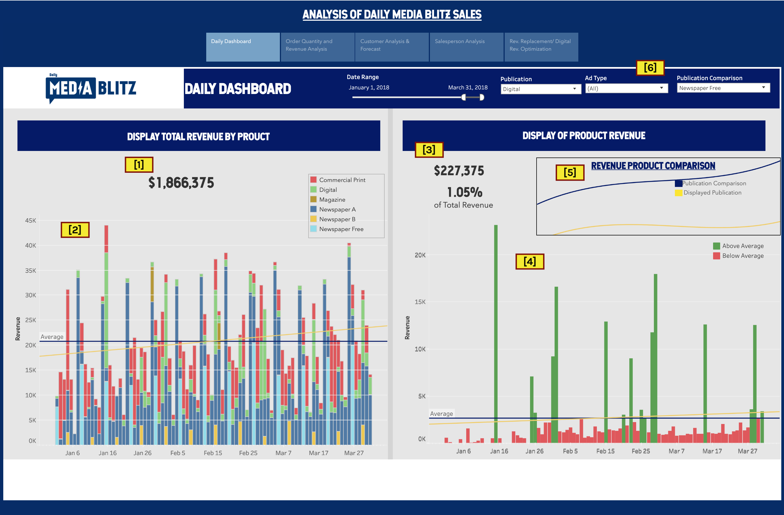
The dashboard contains the following content: [1] total revenue generated by the company, [2] a bar graph representing
daily revenue; with each publication represented by a color, [3] product revenue and its weight in total revenue in percentage, [4] a bar graph
representing daily revenue for the selected product, [5] a line graph to compare trends between two publications, and [6] filters to customize
date range, publication, ad type, and publication comparison.
Total Size - Order Quantity and Revenue Analysis
Based on our initial dashboard, we were asked to take a look and advise on another data point— “total size”. The Blitz’s Director of
Sales, Roy L. Payne, is convinced that lowering the average rate per inch for classified display and display advertising ad types is
generating a greater quantity of orders and driving overall revenue higher. Dick Tate, Director of Finance, is not convinced. He is
warning John that lowering the average rate the last eight months has not caused increased quantities. In fact, he has stated that
“our best customers are now paying less per ad and it is jeopardizing future revenues.”
We prepared visualizations and a brief written analysis that will help John understand what is happening with average rate for
classified display and display advertising in the newspaper and magazine publications. Some questions we were asked were: what is
happening by salesperson, and is Roy or Dick correct, and why?
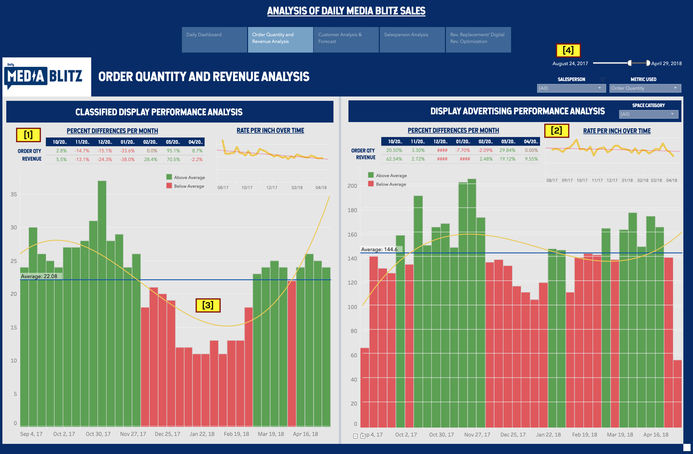
The dashboard was split into two major segments: Classified Display and Display Advertising Performance Analyses. Each of those contained:
[1] Percent Differences per Month, [2] Rate per Inch over time, [3] Performance Analysis over time, and [4] filters for date, salesperson,
and metric used (order quantity or total revenue).
Percent differences per month describe the difference of order quantity and total revenue from the previous month of the timeline set. Rate
per inch over time tracks the rate per inch by week within the set timeline. Performance Analysis illustrates the movement of order quantity
and total revenue over time, with trend and average lines tracking performance.
As the average rate decreases over time (on the directive of management), the order quantity and overall revenue for both publications
also decrease, though at a fluctuating rate over time. The polynomial trend line shows an up and down relationship throughout the 8
months in question (September 2017 to April 2018), peaking in the months of Sept-Oct 2017 and Mar-Apr 2018. Two ways to explain the
consistent fluctuation could be: (1) the content of the advertisements could be seasonal (e.g. sale dates for October-November, Black
Friday and Easter Sales), or (2) the contractual runtime of the advertisements or partnerships with customers could be 5-6 months,
prompting them to renew their contracts with Blitz after that time.
One thing of note is the relationship between the fluctuations of the average rate per inch and the fluctuations of the performance
metrics for both classified display and display advertising products. Both order quantity and overall revenue rise as average rate per
inch spikes for both products. This indicates a generally direct relationship between the rate per inch and order quantity and overall
revenue measures. Analyzing the trends for each salesperson also shows that the measures follow the movement of the average rate per inch.
Since the data shows that the measures follow the movement of the average rate per inch, and that the general trend for both would be
negative (going down over time), Dick Tate would be considered correct in a general sense. However, as there are peak purchasing dates
and corresponding downtimes throughout the year, one could take advantage of the situation and follow an adjustment-based pricing model
rather than a straight-line decrease throughout the year. John could charge more on peak business months (October, November, March,
April, etc.) as more customers renew their contracts (this feeds into Dick’s argument), and charge less on non-peak months (December,
January, February, etc.) to drive in more sales (this feeds into Roy’s argument).
Customer Analysis & Forecast
Next, we were asked about the company's top 20 customers. How had their spending changed over time? Could we predict any future
changes or point out customers at risk?
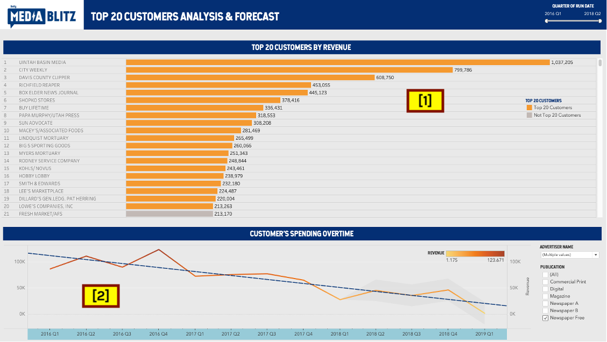
Our dashboard was split into two main segments. The first graph illustrated the top 20 customers ranked by total revenue over time from
2016 Q1 to 2018 Q2. It contains a list of DMB's customers marked by color and ranked by the top 20 in total revenue, filterable by time.
The second graph allowed us to look into a specific customer's change of spending over time. We are able to analyze any single customer
during a chosen time based on the date range we use and by any combination of publications we can choose.
From 2016 Q1 to 2018 Q2 among those Top 20 Customers, there were 3 companies at the highest risk: Rodney Service Company, Macey's /
Associated Foods, and City Weekly. Their total revenues decreased by a larger scale compared to other companies.
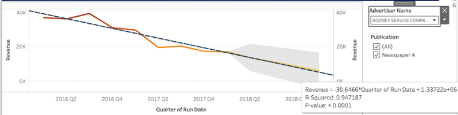
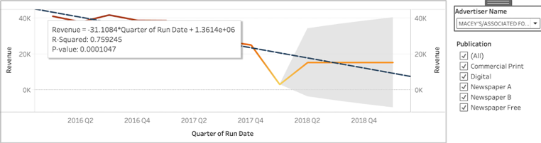
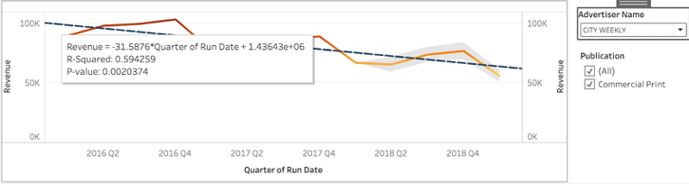
When selecting all 20 customers, the total revenue over time of all 6 publications merely decreased by 13%, and the trend line goes down
very slightly. However, upon breaking down each type of publication we find some interesting trends. First, overall revenue of commercial
print keeps constant. Digital is the only category with an increasing revenue for the time period. Total revenue of magazines had increased
then decreased sharply, and the overall trend is decreasing over time. The trend for all three types of newspapers had fared differently over
the time period, with Newspaper A decreasing constantly over time, Newspaper B having ups and downs with a fairly flat trend line, and Free
Newspapers drastically decreasing over time. One potential change to communicate to consumers is incentivizing them to switch from free newspapers to digital
in order to increase their revenue.
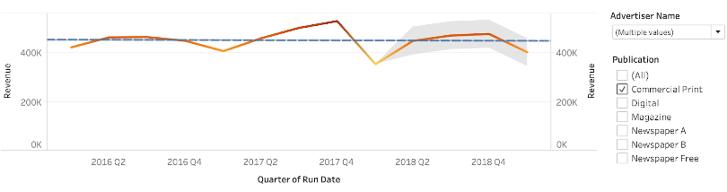
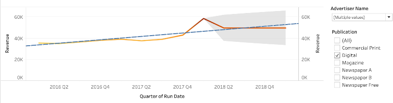
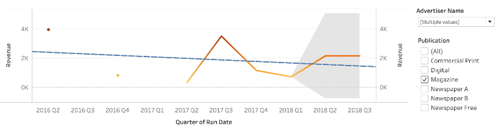
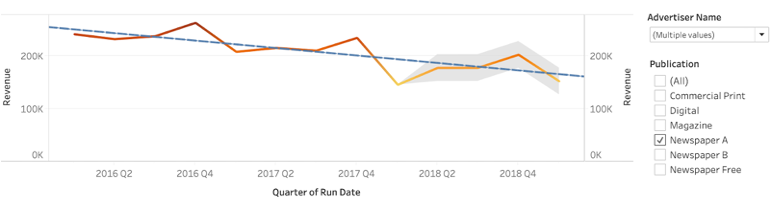
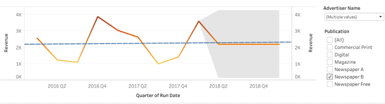
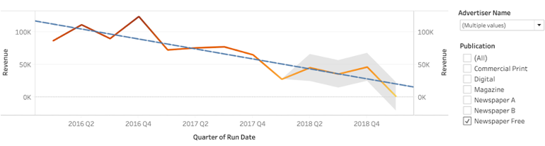
Salesperson Analysis
We then performed an analysis on the opposite end of sales operations - on the salespeople. We wanted to help John understand how his
sellers are impacting the business. Assuming each seller makes $75,000 annually (with benefits), which sellers were most valuable to
John?
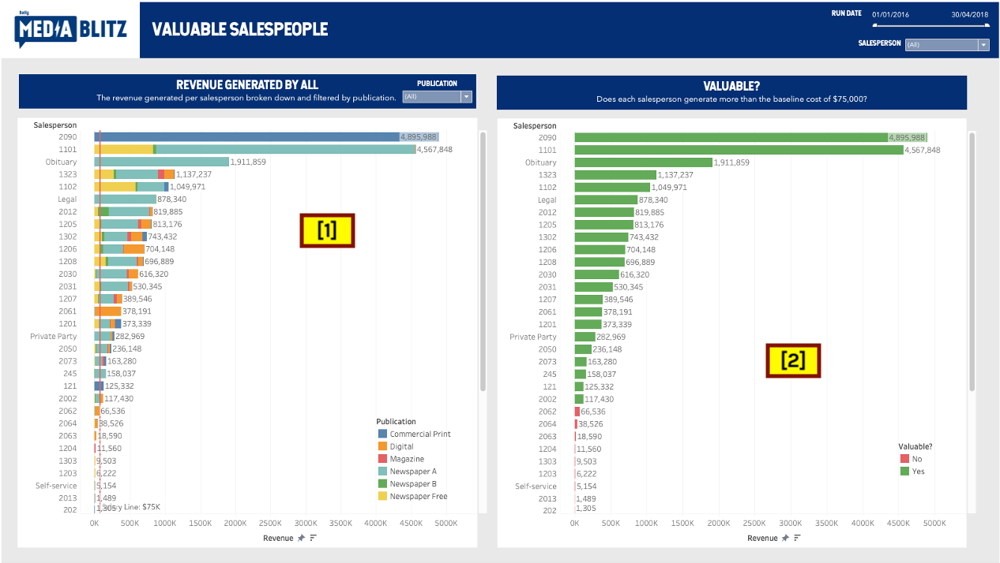
Our dashboard was split into two main segments. The [1] first graph was called “Revenue Generated by Salesperson” and reflects the amount
of revenue each salesperson generated. In addition, each salesperson’s revenue is split into publication type and the publication
filter allows users to see how successful certain salespeople are within certain publication fields. The firm also wants to see which
salespeople generates over $75,000 and I’ve put in a black trend line at 75,000 to create a visual aid. The [2] next graph is clearer at
illustrating which salespeople generate over $75,000.
Salesperson 2090 was the most successful salesperson by generating $4.896 million but the most interesting distinction is that
his/her revenue consists entirely of commercial print. This salesperson runs a near perfect monopoly in commercial print, with
the next highest salesperson generating revenue via commercial print is only able to generate roughly $125,000.
The second graph is called “Valuable?” and determines which salespeople generate over the minimum amount of $75,000. I created a
calculated field that labels those who generate less than or $75,000 as red. At the same time, the calculated field labels those who
generate more than $75,000 as green. 50% of the salesforce (22/44) are valuable in generating more than the minimum requirement, while
the other half are not valuable and the firm is better off recruiting different salespeople.
The two most valuable salespeople are salespeople 2090 and 1101, who generate $4.896 million and $4.568 million respectively.
Interestingly, salesperson 2090’s revenue consists entirely of commercial print while salesperson 1101’s revenue consists entirely of
newspapers. It’s worth mentioning that the two most valuable salespeople to the firm are very undiversified in terms of their
publication type.
Digital Agency Analysis
We also wanted to find out the overall effect of Blitz's Digital Agency on the print revenue decline and which digital products show
the most promise. We also wanted to help John understand the effect of digital discounts, transactions, and revenue on company performance.
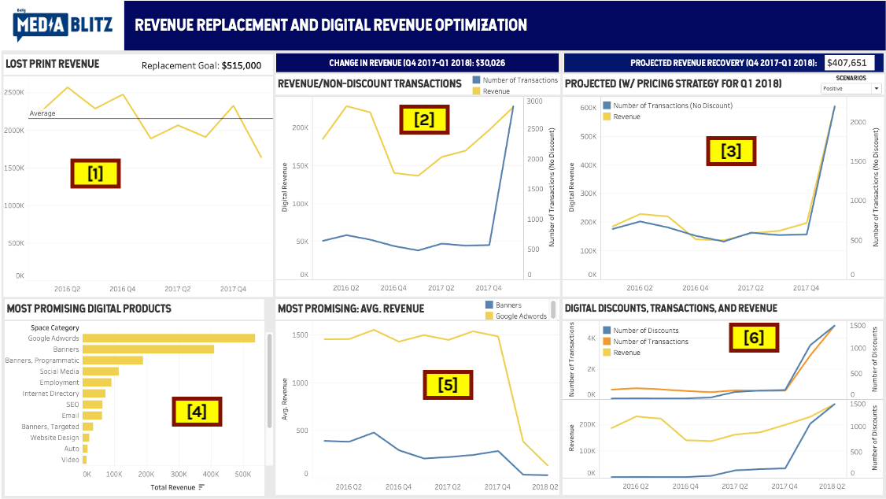
This next dashboard contains 6 segments illustrating the current status of the digital agency. We believe that the digital agency will be
able to replace the print revenue decline. The first step to coming to this conclusion was identifying the losses that the digital agency
will have to replace. This is represented by the first graphic, where the difference between the average line and the final point of the line
graph is the quarterly replacement goal (roughly $515,000). The second graphic illustrates the digital revenue actuals in comparison to the
number of non-discount transactions. From this, we identified that the number of transactions increased tremendously from Q4 2017 to Q1 2018,
but revenue did not increase at the same rate. This is because Blitz heavily decreased the average price per transaction (from $344 to $79)
around that time. We believe that there is an optimal price per transaction to generate the most revenue and get Blitz back on track.
In the next graphic, we created 3 different scenarios – one expected, one unsuccessful, and one highly successful – to project the possible
transactional impact and revenue gains from establishing an average price per transaction of $275. It is difficult to say how likely each
scenario is without information on market demand and market pricing for digital advertising. However, these assumptions provide a starting
point for making the leap.
The digital products that show the most promise are Google Adwords and Banners, as they are the two leaders in revenue generation.
Furthermore, the fifth graph shows that both of these space categories have dramatically dropped in price per transaction. Even though
these drops have caused a slight increase in revenue, we once again believe that the pricing is not optimal. With both categories, there
is a lot of room to figure out where this point is, and it will most likely lead to steeper increases in revenue.
When looking over the data set, our group became very curious about the benefits of zero revenue transactions. We labeled these as
“discounts” to customers. What we found through our analysis of them is that they have been very influential in creating more non-discount
transactions. In most cases, including this one, more transactions lead to more revenue. However, Blitz has not been able to realize its
true revenue potential because it has decreased the average price of non-discount transactions. If Blitz continues to offer discounts to
customers while marginally increasing its transactional prices, there will be huge benefits.
Other Data We May Need
In order to thoroughly analyze Blitz’ sales data and provide meaningful insights and analyses to John, more data must be taken to complement
our current analyses. Profit margins would definitely help see sales data and performance from a profitability standpoint, rather than a
purely revenue-based view. Optimization of price is also an important objective for companies like Blitz that would want to be more adaptive
over time. Finding out what customers are willing to pay for digital advertising would give them the best and most optimal price to charge
those who want to ride the digital wave.
In an earlier analysis, we discovered that the quantity of orders and total revenue of Classified Display and Display Advertising products
would spike at certain parts of the year. Full-blown descriptions of each order, including content of classified displays and
subscription/contract data would help determine purchasing patterns and help set optimal prices at different points of the year. Having the
content of classified displays will help determine whether or not there is a pattern to the fluctuating numbers in the analysis of order
quantities and total revenue. To further determine a pattern in the analysis of order quantities and total revenue, finding out if customer
contracts start and end on these dates is important. Doing so would help John understand and anticipate renewal dates.